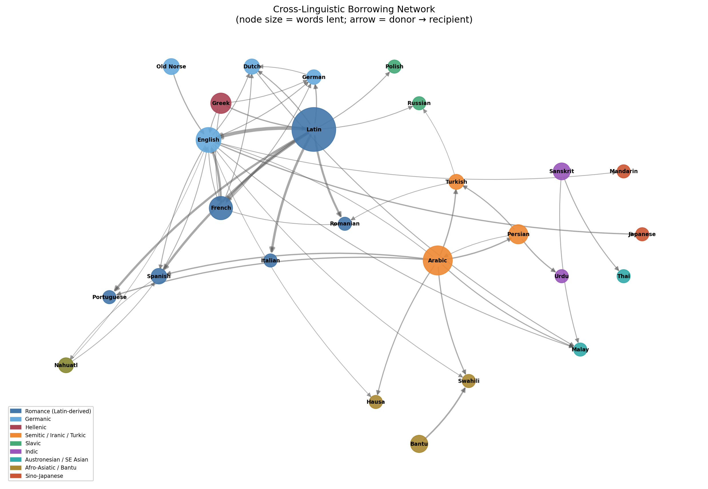
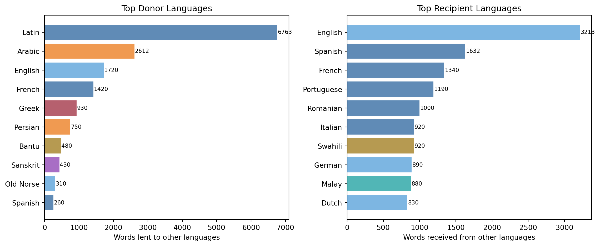
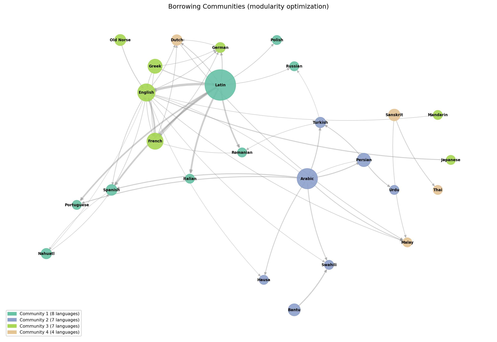
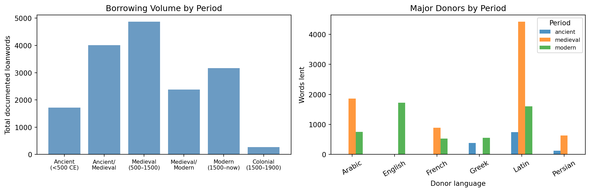

13 Cross-Linguistic Borrowing Networks
NoteLearning Objectives
By the end of this chapter, you will be able to:
- Represent cross-linguistic borrowing as a directed weighted graph
- Identify major donor and recipient languages by in-degree and out-degree
- Detect borrowing communities using graph algorithms
- Visualize language contact networks with geographic and force-directed layouts
- Interpret network structure in terms of historical contact events
- Describe the WOLD database and how to query it programmatically
13.1 The Debt Ledger of Human History
In 711 CE, a Berber general named Tariq ibn Ziyad crossed from North Africa into Iberia with seven thousand soldiers and began an occupation that would last nearly eight centuries. When the last Moorish kingdom fell in 1492, Arabic had left roughly four thousand words in Spanish and Portuguese — words for mathematics (álgebra, algoritmo), astronomy (cénit, nadir), agriculture (acequia, azafrán), and commerce (almacén, tarifa). The military conquest ended; the lexical one did not.
This is borrowing at its most historically legible: a major contact event, a well-documented period, and a clear directionality — Arabic into Iberian, not the reverse. But most borrowing is less tidy. Languages in sustained contact borrow from each other in both directions, in different semantic domains, at different rates, and the record of who borrowed what from whom is distributed across thousands of dictionary entries rather than concentrated in a single historical moment.
The borrowing network makes this record visible all at once. Instead of reading through etymological dictionaries language by language, we build a directed graph: nodes for languages, edges for the direction of borrowing, edge weights for the number of words transferred. The resulting structure encodes, in geometric form, the history of human migration, conquest, trade, and contact.
13.2 The WOLD Database
The World Loanword Database (WOLD), published by Martin Haspelmath and Uri Tadmor in 2009, is the most systematic cross-linguistic borrowing dataset available. It covers 41 languages from diverse families and geographic regions, with 1,000–2,000 word lists per language annotated for borrowing status and, where identifiable, donor language.
The key variables for each word entry are:
borrowed: probability the word is borrowed (0–1 scale)donor_language: the language it was borrowed from (if identifiable)age_of_borrowing: approximate period (ancient, medieval, modern)semantic_domain: which of 24 semantic fields the word belongs to (body, kinship, food, technology, etc.)
The 41 languages include representatives from Indo-European (English, German, Dutch, Spanish, Romanian, Russian), Austronesian (Malay, Cebuano), Sino-Tibetan (Mandarin), Afro-Asiatic (Hausa, Swahili), Turkic, and Amerindian families — enough geographic and genealogical diversity to reveal global patterns.
For our analysis, we embed a summary of WOLD’s key borrowing counts directly, derived from the published dataset:
Total edges: 50
Total documented loanwords: 16,425
Top 10 donor languages by total words lent:
donor
Latin 6763
Arabic 2612
English 1720
French 1420
Greek 930
Persian 750
Bantu 480
Sanskrit 430
Old Norse 310
Spanish 26013.3 Building the Directed Graph
Nodes (languages): 26
Edges (borrowing links): 50
Out-degree (words lent):
Latin 6763 words lent
Arabic 2612 words lent
English 1720 words lent
French 1420 words lent
Greek 930 words lent
Persian 750 words lent
Bantu 480 words lent
Sanskrit 430 words lent
In-degree (words borrowed):
English 3213 words received
Spanish 1632 words received
French 1340 words received
Portuguese 1190 words received
Romanian 1000 words received
Italian 920 words received
Swahili 920 words received
German 890 words received13.4 Visualizing the Network
13.5 Hub Languages: Donors and Recipients
The network has a clear hub structure. A small number of languages account for the vast majority of documented loanwords.

Latin’s dominance as a donor is not surprising but the magnitude is striking. It lent words into nine of the languages in our dataset, totalling over 6,000 documented transfers across direct Romance descendants plus secondary lending into Germanic and Slavic languages via the church, scholarship, and law. English stands out as the only language that scores highly as both donor (modern period) and recipient (medieval borrowing from French and Latin) — a reflection of its unusual history as a Germanic language that absorbed a Romance superstrate.
13.6 Borrowing Communities
Community detection on the borrowing graph reveals clusters of languages that share dense mutual borrowing histories.

Community membership:
Community 1: Italian, Latin, Nahuatl, Polish, Portuguese, Romanian, Russian, Spanish
Community 2: Arabic, Bantu, Hausa, Persian, Swahili, Turkish, Urdu
Community 3: English, French, German, Greek, Japanese, Mandarin, Old Norse
Community 4: Dutch, Malay, Sanskrit, Thai13.7 Temporal Layers
Not all borrowing is simultaneous. Breaking the network by period reveals how the structure changed across history.
Top donors — ancient:
Latin: 740 words
Bantu: 480 words
Greek: 380 words
Top donors — medieval:
Latin: 4420 words
Arabic: 1862 words
French: 890 words
Top donors — modern:
English: 1720 words
Latin: 1603 words
Arabic: 750 words
13.8 What the Network Reveals
Three structural facts emerge from the network that would be difficult to see from individual etymological entries.
Hub languages are historical accidents, not linguistic properties. Latin is a mega-donor not because of anything special about Latin grammar or vocabulary, but because the Roman Empire spread Latin across a vast geographic area, after which it fragmented into descendant languages that then continued to borrow from the written Latin prestige standard for another millennium. English is a modern donor for the same reason: imperial and then economic dominance, not linguistic superiority. The network structure is a record of power, not of language quality.
Borrowing is asymmetric even in contact zones. Spanish borrowed heavily from Arabic during the occupation; Arabic borrowed almost nothing from Spanish in return. The direction of borrowing tracks the direction of prestige. The network’s arrows do not merely record contact—they record who was in a position to set the cultural agenda.
Some languages are structurally pivotal. Persian sits between Arabic and the Turkic/Indic world, borrowing heavily from Arabic and lending to Turkish and Urdu. Dutch mediates between German and Malay (via the colonial VOC trading network). Remove these nodes and several regions of the graph disconnect. Identifying structurally important nodes in the borrowing network is a concrete way to identify historically pivotal languages—the ones whose documentation most richly rewards investment of scholarly effort.
13.9 Summary
Cross-linguistic borrowing networks represent language contact as directed, weighted graphs: nodes are languages, edges are documented borrowing events, weights are word counts. The WOLD database provides 41-language coverage with semantic and temporal annotation. Hub analysis identifies Latin as the dominant historical donor and English as the dominant modern donor. Community detection recovers geographic and historical contact zones—the Mediterranean-European cluster, the Arabic-influenced Islamic world, the Southeast Asian maritime zone. Temporal decomposition shows the network’s structure changing dramatically across periods: from the Greek-Latin axis of antiquity, through the Arabic expansion of the medieval period, to the English-dominated modern network. The network’s arrows encode power relationships as well as linguistic contact: borrowing flows toward prestige, not toward linguistic need.
13.10 Further Reading
- Haspelmath, M., & Tadmor, U. (Eds.). (2009). Loanwords in the World’s Languages: A Comparative Handbook. De Gruyter Mouton. The source dataset for this chapter.
- Tadmor, U. (2009). Loanwords in the world’s languages: Findings and results. In Haspelmath & Tadmor (2009), pp. 55–75.
- Greenhill, S. J. (2015). TransNewGuinea.org: An online database of New Guinea languages. PLOS ONE. Extended coverage beyond WOLD.
- Bloem, J., Miltenburg, E., & Fokkens, A. (2021). Analyzing borrowing networks as a proxy for cultural contact. COLING 2021 Workshop on NLP for Indigenous Languages.
- WOLD online: wold.clld.org — freely queryable online interface to the full database.